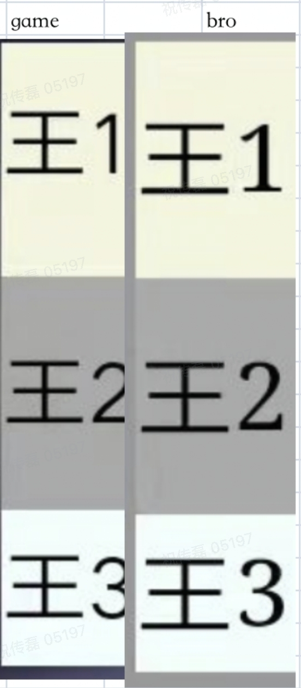

一起看看
此坑是在Overload的公告页面中遇到的。开发是在PC上，调试时是在手机浏览器里，并没发现问题。
但更新后，用游戏客户端打开，有些地方上下不居中。有的偏上，有的偏下。如下图
如果是你，你会怎么处理呢？
尝试修改
前后尝试了常见的居中方式:
line-height的值和行高相等
绝对定位+偏移
1
2
3
4
5.title {
position: absolute;
top: 50%;
transform: translate(0,-50%);
}flex布局
1
2
3
4.title {
display: flex;
align-items: center;
}
结果是：在手机浏览器上测试都是上下居中的，就游戏客户端里没效果。
后来为了避免其他代码影响，就写了一个单页面来测试，结果依旧。如下图
这时是不是认为肯定是客户端设置某些值引起的😠。就带着测试结果找客户端的同事一起排查了。但结果很遗憾，客户端并没有特殊配置。又打回原形从头再来了，再次查资料找方案。
后来翻到一篇文章，文中说到一种方案：放大后再缩小。起初的想法是缩小后误差也会小，即使解决不了，至少也会美观一点。
最终方案
经过几次测试，最终修复方案:看一下代码
1 | <style> |
即将所有元素放大两倍，画布放大两倍，再从最外层缩小一半。搞定！
用到rem，所以html元素字体乘2，那所有元素也会方法两倍，原来字体5px的现在是10px，
12px的现在是24px。
猜测: 是元素字体小于了游戏客户端webview支持的最小字体导致的。有兴趣的可以验证一下😄